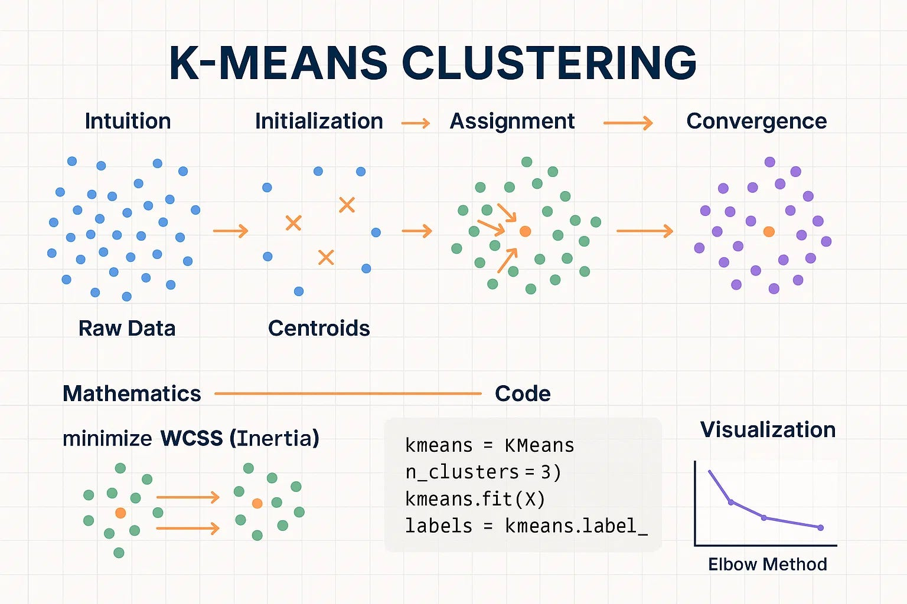
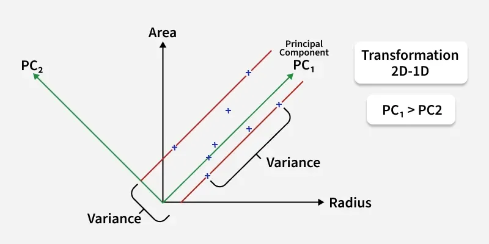
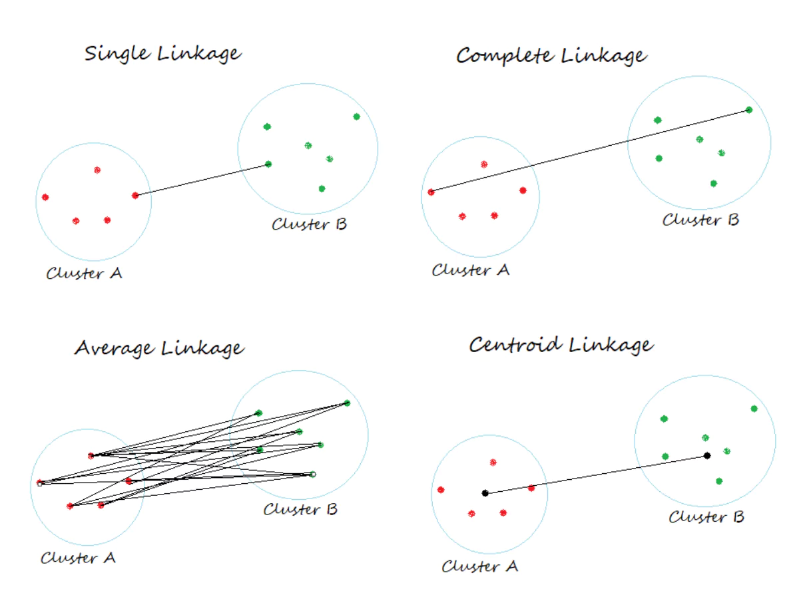
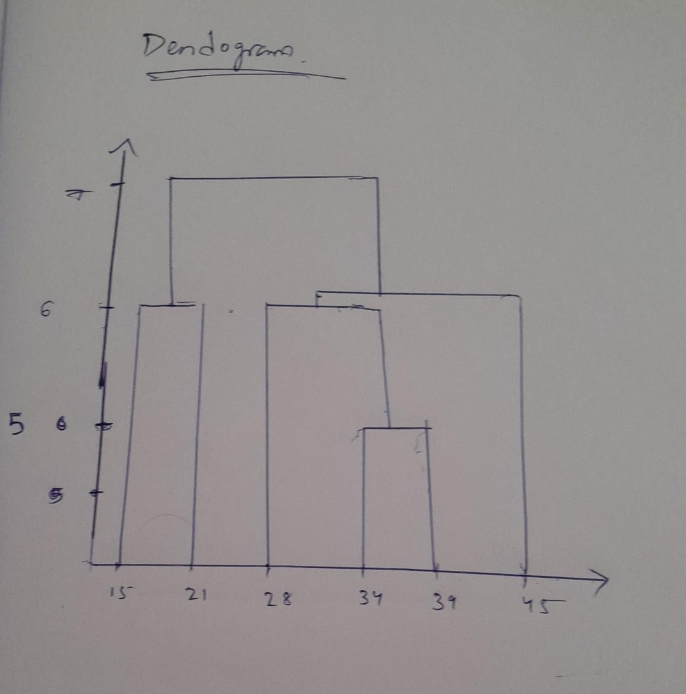
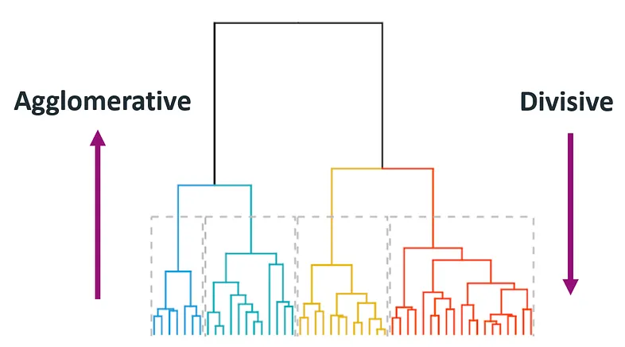

Machine Learning — Examination Preparation
Questions 31 – 40
Question 31 · Numerical
| Object | Attribute 1 (X) | Attribute 2 (Y) |
|---|---|---|
| X1 | 2 | 3 |
| X2 | 5 | 4 |
| X3 | 1 | 2 |
| X4 | 4 | 5 |
| X5 | 6 | 3 |
| X6 | 3 | 2 |
Initial centroids: C1 = X1 = (2, 3) and C2 = X2 = (5, 4).
X1 (2,3): to C1 = √0 = 0 | to C2 = √((2−5)²+(3−4)²) = √10 ≈ 3.16 → C1
X2 (5,4): to C1 = √10 ≈ 3.16 | to C2 = √0 = 0 → C2
X3 (1,2): to C1 = √((1−2)²+(2−3)²) = √2 ≈ 1.41 | to C2 = √((1−5)²+(2−4)²) = √20 ≈ 4.47 → C1
X4 (4,5): to C1 = √((4−2)²+(5−3)²) = √8 ≈ 2.83 | to C2 = √((4−5)²+(5−4)²) = √2 ≈ 1.41 → C2
X5 (6,3): to C1 = √((6−2)²+(3−3)²) = 4.00 | to C2 = √((6−5)²+(3−4)²) = √2 ≈ 1.41 → C2
X6 (3,2): to C1 = √((3−2)²+(2−3)²) = √2 ≈ 1.41 | to C2 = √((3−5)²+(2−4)²) = √8 ≈ 2.83 → C1
| Object | Point | Distance to C1(2,3) | Distance to C2(5,4) | Assigned to |
|---|---|---|---|---|
| X1 | (2,3) | 0 | √10 ≈ 3.16 | C1 |
| X2 | (5,4) | √10 ≈ 3.16 | 0 | C2 |
| X3 | (1,2) | √2 ≈ 1.41 | √20 ≈ 4.47 | C1 |
| X4 | (4,5) | √8 ≈ 2.83 | √2 ≈ 1.41 | C2 |
| X5 | (6,3) | 4.00 | √2 ≈ 1.41 | C2 |
| X6 | (3,2) | √2 ≈ 1.41 | √8 ≈ 2.83 | C1 |
Cluster 1 (C1): X1(2,3), X3(1,2), X6(3,2)
Cluster 2 (C2): X2(5,4), X4(4,5), X5(6,3)
New C1: x = (2+1+3)/3 = 6/3 = 2 | y = (3+2+2)/3 = 7/3 ≈ 2.33
New C2: x = (5+4+6)/3 = 15/3 = 5 | y = (4+5+3)/3 = 12/3 = 4

Question 32
Both K-Means and K-Medoid are centroid-based clustering algorithms that partition data into K clusters. While they share a similar iterative structure, they differ fundamentally in how the cluster centre is defined and updated.
In K-Means, the centre of each cluster is the computed mean of all data points assigned to it. This mean may not correspond to any actual data point. The algorithm minimises the Within-Cluster Sum of Squares (WCSS).
K-Means is computationally efficient with O(nkt) complexity and is well-suited for large datasets. However, it is highly sensitive to outliers — a single extreme point can drag the centroid far from the true cluster centre.
K-Medoid requires that the cluster centre be an actual data point called a medoid. The most widely used implementation is PAM (Partitioning Around Medoids). The algorithm selects the point within a cluster that minimises total dissimilarity to all other cluster members.
Because the centre is always a real data point, K-Medoid is significantly more robust to outliers and noise. It can also work with non-Euclidean distance measures, making it applicable to categorical data. The trade-off is higher computational cost: O(k(n−k)²) per iteration.
| Aspect | K-Means | K-Medoid |
|---|---|---|
| Cluster Centre | Computed mean (may not be a real point) | Actual data point (medoid) |
| Sensitivity to Outliers | High — outliers skew the mean | Low — real point resists extremes |
| Time Complexity | O(nkt) — faster | O(k(n−k)²) — slower |
| Distance Metric | Typically Euclidean | Any dissimilarity measure |
| Data Types | Numeric only | Numeric, categorical, mixed |
| Best Used When | Large, clean, numeric datasets | Noisy data, outliers present, non-Euclidean space |
K-Means is preferred when the dataset is large, clean, and numeric, and speed is a priority. K-Medoid is preferred when data contains outliers or noise, when interpretability of the cluster centre matters (the medoid is a real, recognisable object from the dataset), or when dealing with non-numeric data where computing a mean is not meaningful.
Question 33
Real-world datasets often contain hundreds of features. Many are redundant or correlated, carrying overlapping information. Dimensionality reduction is the process of reducing the number of features while retaining as much useful information as possible, reducing the curse of dimensionality and lowering computational cost.
Principal Component Analysis (PCA) is the most widely used dimensionality reduction technique. It identifies the directions — called principal components — along which the data varies the most, and projects the data onto those directions. The components are linear combinations of the original features and are ordered by the amount of variance they capture.

| Aspect | How PCA Addresses It |
|---|---|
| Variance Preservation | Selecting components that explain 95%+ of variance retains most data structure while cutting dimensions. |
| Redundancy Removal | Correlated features are transformed into uncorrelated principal components, eliminating overlapping information. |
| Noise Reduction | Lower-variance components often represent noise; discarding them denoises the dataset. |
| Data Compression | High-dimensional data is compressed while preserving essential patterns — useful in image processing. |
| Visualisation | PCA reduces data from 10D, 100D, etc. to 2D or 3D for human inspection. |
| Metric | Description |
|---|---|
| Explained Variance Ratio | Proportion of total variance captured by each component. A cumulative ratio of 95% is typically a good cut-off. |
| Reconstruction Error | Measures how well the original data can be reconstructed from the reduced representation. Lower is better. |
| Downstream Model Performance | Compare ML model accuracy before and after PCA. If performance is similar, the reduction is effective. |
Question 34
In hierarchical clustering, after individual data points are placed into singleton clusters, we need a rule to measure the distance between clusters (not just individual points) as merging proceeds. This is the role of linkage methods. Different linkage rules lead to very different cluster shapes and structures.
The distance between two clusters is defined as the minimum distance between any single pair of points, one from each cluster.
Single-linkage tends to produce elongated, chain-like clusters due to the chaining effect — if one point from cluster A is close to one point from cluster B, the clusters merge even if most of their points are far apart. It is highly sensitive to outliers and noise.
Best for: Detecting non-convex, elongated, or irregular cluster shapes. Useful when clusters are expected to be connected in chains.
The distance between two clusters is the maximum distance between any pair of points across the two clusters — the distance between the two farthest points.
Complete-linkage produces compact, roughly spherical clusters of similar diameter. It avoids chaining but can break large natural clusters unnecessarily. Less sensitive to outliers than single-linkage.
Best for: Compact, well-separated clusters where cluster diameter needs to be controlled.
The distance between clusters is the average of all pairwise distances between points in the two clusters. It is a middle-ground approach, generally more robust than both single and complete linkage.
Best for: Balanced clusters, datasets with moderate noise, general-purpose hierarchical clustering.

| Linkage Method | Distance Used | Cluster Shape | Outlier Sensitivity | Best Scenario |
|---|---|---|---|---|
| Single | Minimum | Chain-like, elongated | High | Irregular, non-convex shapes |
| Complete | Maximum | Compact, spherical | Lower | Well-separated, compact clusters |
| Average | Mean of all pairs | Balanced | Moderate | General use, moderate noise |
Question 35
Both K-Means and hierarchical clustering are valid unsupervised learning approaches. K-Means becomes the clearly better choice under specific conditions related to dataset size, cluster geometry, and prior knowledge of K.
A retail company wants to segment 500,000 customers into 5 distinct groups based on purchase frequency, average spend, and product category preferences, for targeted marketing campaigns. The number of segments (K = 5) is known in advance from business requirements.
Scalability: Hierarchical clustering has O(n² log n) time complexity and requires an n×n distance matrix — computationally infeasible for 500,000 records. K-Means operates at O(nkt), linear in the number of data points, making it vastly more scalable.
Known K: The business has already defined 5 customer segments. Hierarchical clustering's strength is in discovering K through the dendrogram, which adds unnecessary overhead when K is predetermined.
Compact, Globular Clusters: Customer segments in retail tend to be relatively well-separated and roughly spherical in feature space after preprocessing. K-Means performs optimally in this geometry.
Iterative Refinement: K-Means allows continuous re-clustering as new customer data arrives — simply re-run using existing centroids as starting points. Hierarchical clustering would require rebuilding the entire dendrogram from scratch.
K-Means is preferred over hierarchical clustering when the dataset is large, K is known in advance, clusters are expected to be compact and spherical, and scalability or real-time processing is a requirement.
Question 36 · Numerical
Data points (sorted): 15, 21, 28, 34, 39, 45. For 1D data, distance = |a − b|.
| 15 | 21 | 28 | 34 | 39 | 45 | |
|---|---|---|---|---|---|---|
| 15 | 0 | 6 | 13 | 19 | 24 | 30 |
| 21 | 6 | 0 | 7 | 13 | 18 | 24 |
| 28 | 13 | 7 | 0 | 6 | 11 | 17 |
| 34 | 19 | 13 | 6 | 0 | 5 | 11 |
| 39 | 24 | 18 | 11 | 5 | 0 | 6 |
| 45 | 30 | 24 | 17 | 11 | 6 | 0 |
Minimum = 5 (between 34 and 39) → Merge {34, 39}
Clusters: {15}, {21}, {28}, {34,39}, {45}. Distance to {34,39} = min(dist to 34, dist to 39).
| 15 | 21 | 28 | {34,39} | 45 | |
|---|---|---|---|---|---|
| 15 | 0 | 6 | 13 | min(19,24)=19 | 30 |
| 21 | 6 | 0 | 7 | min(13,18)=13 | 24 |
| 28 | 13 | 7 | 0 | min(6,11)=6 | 17 |
| {34,39} | 19 | 13 | 6 | 0 | min(11,6)=6 |
| 45 | 30 | 24 | 17 | 6 | 0 |
Minimum = 6 (between 28 and {34,39}) → Merge {28, 34, 39}
Clusters: {15}, {21}, {28,34,39}, {45}
| 15 | 21 | {28,34,39} | 45 | |
|---|---|---|---|---|
| 15 | 0 | 6 | min(13,19,24)=13 | 30 |
| 21 | 6 | 0 | min(7,13,18)=7 | 24 |
| {28,34,39} | 13 | 7 | 0 | min(17,11,6)=6 |
| 45 | 30 | 24 | 6 | 0 |
Minimum = 6 (between {28,34,39} and 45) → Merge {28, 34, 39, 45}
Clusters: {15}, {21}, {28,34,39,45}
| 15 | 21 | {28,34,39,45} | |
|---|---|---|---|
| 15 | 0 | 6 | min(13,19,24,30)=13 |
| 21 | 6 | 0 | min(7,13,18,24)=7 |
| {28,34,39,45} | 13 | 7 | 0 |
Minimum = 6 (between 15 and 21) → Merge {15, 21}
Clusters: {15,21} and {28,34,39,45}. Distance = min(dist 15 to {28,34,39,45}, dist 21 to {28,34,39,45}) = min(13, 7) = 7.
Merge everything → one cluster at distance 7.
| Step | Clusters Merged | Distance |
|---|---|---|
| 1 | {34} + {39} | 5 |
| 2 | {28} + {34,39} | 6 |
| 3 | {28,34,39} + {45} | 6 |
| 4 | {15} + {21} | 6 |
| 5 | {15,21} + {28,34,39,45} | 7 |

Question 37
Centroid-based clustering is a category of clustering algorithms where each cluster is represented by a central point called a centroid. Every data point in the dataset is assigned to the cluster whose centroid it is closest to, based on a defined distance metric. K-Means is the most prominent example of this paradigm.
A centroid is a virtual representative point for a cluster — typically the mean of all data points currently assigned to that cluster. It may or may not correspond to an actual data point. The centroid captures the "centre of gravity" of the cluster in the feature space.
K-Means minimises the Within-Cluster Sum of Squares (WCSS) — the total squared distance between every point and its assigned cluster centroid. This is also called inertia.
| Property | Detail |
|---|---|
| Cluster shape assumption | Convex and isotropic (roughly spherical) — struggles with elongated or irregular shapes |
| Requires K in advance | Number of clusters must be specified before running |
| Initialisation sensitivity | Bad starting points can lead to poor local optima; K-Means++ mitigates this |
| Scalability | Computationally efficient O(nkt); scales well to large datasets |
| Outlier sensitivity | Outliers distort the mean centroid; K-Medoid is more robust |
Question 38
Hierarchical clustering builds a tree of clusters called a dendrogram. This tree can be constructed in two opposite directions, leading to two fundamentally different approaches: agglomerative (bottom-up) and divisive (top-down).
This is the more common approach. It starts with each data point as its own individual cluster and progressively merges the two closest clusters at each step, until all points form a single cluster.
Implication: Agglomerative clustering builds from fine-grained detail upward. Local structure (close neighbours) is captured early and accurately. Better at identifying small, tight clusters within larger groups. O(n² log n) complexity. More commonly used in practice.
Divisive clustering takes the opposite approach. It begins with all data points in a single cluster and recursively splits the most heterogeneous cluster into two sub-clusters, continuing until each point is its own cluster.
Implication: Divisive clustering captures global structure first — the major distinctions between large groups are made at the top of the dendrogram. More computationally expensive (O(2ⁿ) worst case) but tends to produce more accurate top-level splits.

| Aspect | Agglomerative (Bottom-Up) | Divisive (Top-Down) |
|---|---|---|
| Starting point | N singleton clusters | 1 all-encompassing cluster |
| Operation | Merge similar clusters iteratively | Split dissimilar clusters iteratively |
| Time complexity | O(n² log n) | O(2ⁿ) worst case |
| Captures | Local structure first | Global structure first |
| Practical usage | Much more commonly used | More complex to implement |
Question 39
In traditional K-Means, each data point is assigned to exactly one cluster — this is called hard or crisp assignment. Fuzzy K-Means (also called Fuzzy C-Means, or FCM) relaxes this constraint by allowing each point to belong to multiple clusters simultaneously, with a degree of membership for each.
Instead of a binary cluster assignment, each data point xᵢ is given a membership value μᵢⱼ for each cluster j, where 0 ≤ μᵢⱼ ≤ 1. A value of 1 means the point fully belongs to that cluster; values between 0 and 1 represent partial membership. The membership values for a given point must sum to 1 across all clusters:
Fuzzy K-Means minimises a weighted version of WCSS, where distances are weighted by membership values raised to a fuzziness parameter m (typically m = 2):
The fuzziness parameter m controls the degree of cluster overlap. When m = 1, the algorithm approaches hard K-Means. As m → ∞, all memberships converge to 1/K (complete fuzziness with no meaningful separation).
| Aspect | K-Means | Fuzzy K-Means |
|---|---|---|
| Cluster Assignment | Hard (one cluster per point) | Soft (partial membership in all clusters) |
| Membership Value | 0 or 1 only | Any value between 0 and 1 |
| Centroid Calculation | Simple mean of assigned points | Weighted mean using membership values |
| Boundary Points | Forced into exactly one cluster | Can straddle multiple clusters |
| Objective Function | Minimises WCSS | Minimises fuzzy weighted WCSS |
| Computational Cost | Lower | Higher (more parameters to update) |
Question 40
Both K-Means and hierarchical clustering have distinct strengths and weaknesses. K-Means is fast but sensitive to initialisation and requires K to be known. Hierarchical clustering is robust and reveals structure but is computationally expensive on large datasets. A hybrid approach can exploit the best of both.
The core idea is a two-phase algorithm:
The fundamental problem with vanilla K-Means is dependence on random initialisation — poor starting centroids can trap the algorithm in a local optimum. By using hierarchical clustering to find structurally meaningful starting points, we eliminate this randomness and guide K-Means toward a globally better solution.
Running hierarchical clustering on only a sample rather than the full dataset keeps the computational cost manageable — the expensive O(n² log n) step applies to only a small fraction of the data. K-Means then handles the full dataset efficiently.
| Advantage | Explanation |
|---|---|
| Robustness | Hierarchical phase provides initialisation that reflects true data structure, making the result far less dependent on chance. |
| Scalability | By limiting hierarchical clustering to a sample, the method remains feasible for large datasets where pure hierarchical clustering would fail. |
| Better Convergence | Smart initialisation means K-Means converges in fewer iterations, saving computation time. |
| Automatic K Guidance | The dendrogram from Phase 1 can help determine a good value of K by examining where large jumps in merge distance occur. |
| Reduced SSE | Better starting centroids lead to lower final WCSS, producing higher-quality clusters. |
This hybrid method leverages hierarchical clustering's strength in uncovering natural structure with K-Means' scalability and speed. It is particularly well-suited for large, messy real-world datasets where the number of clusters is uncertain and random initialisation of K-Means tends to be unreliable.